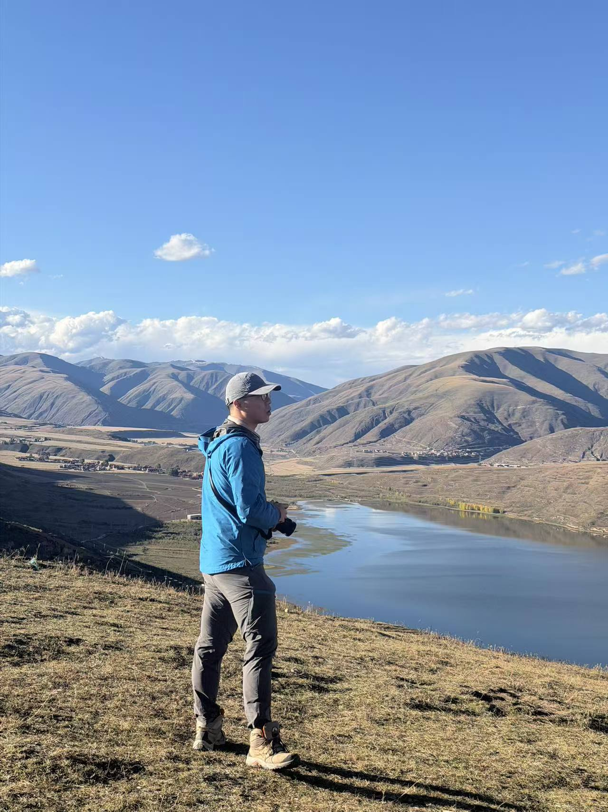
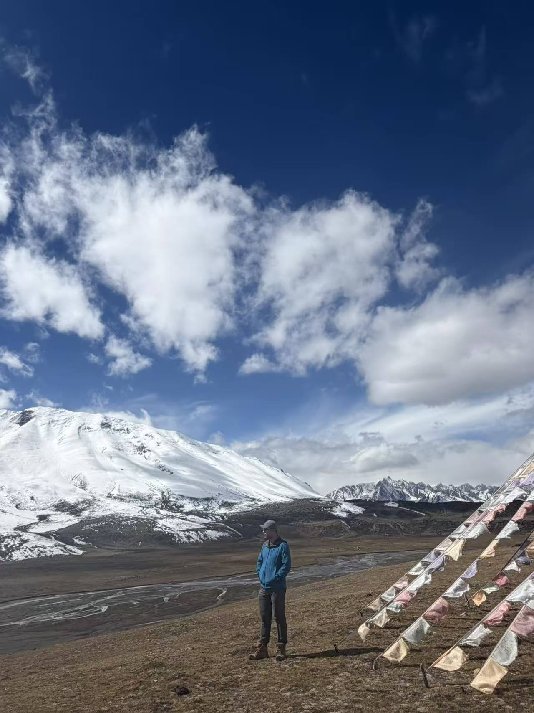
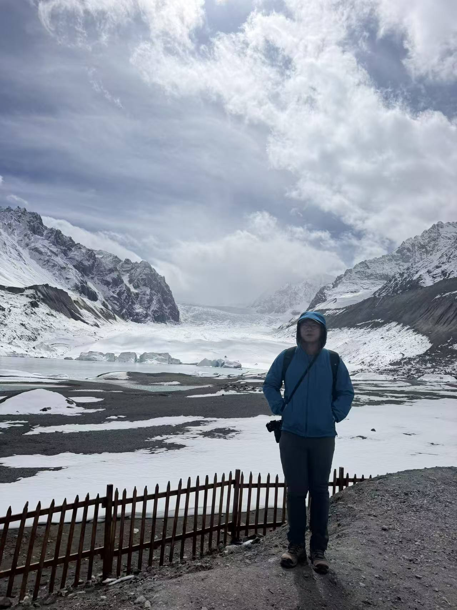
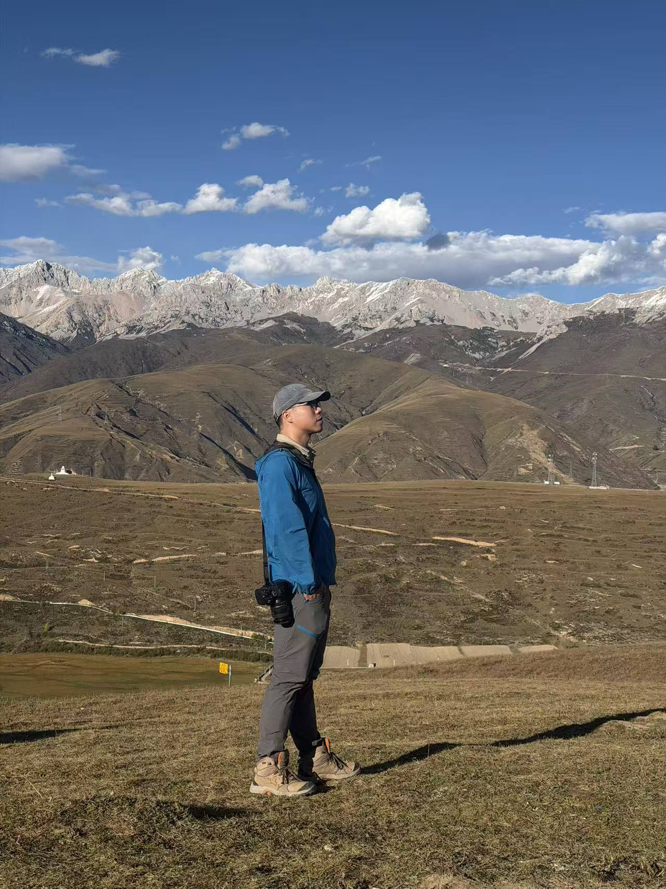
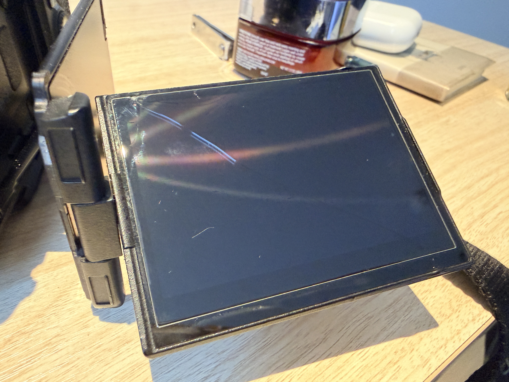
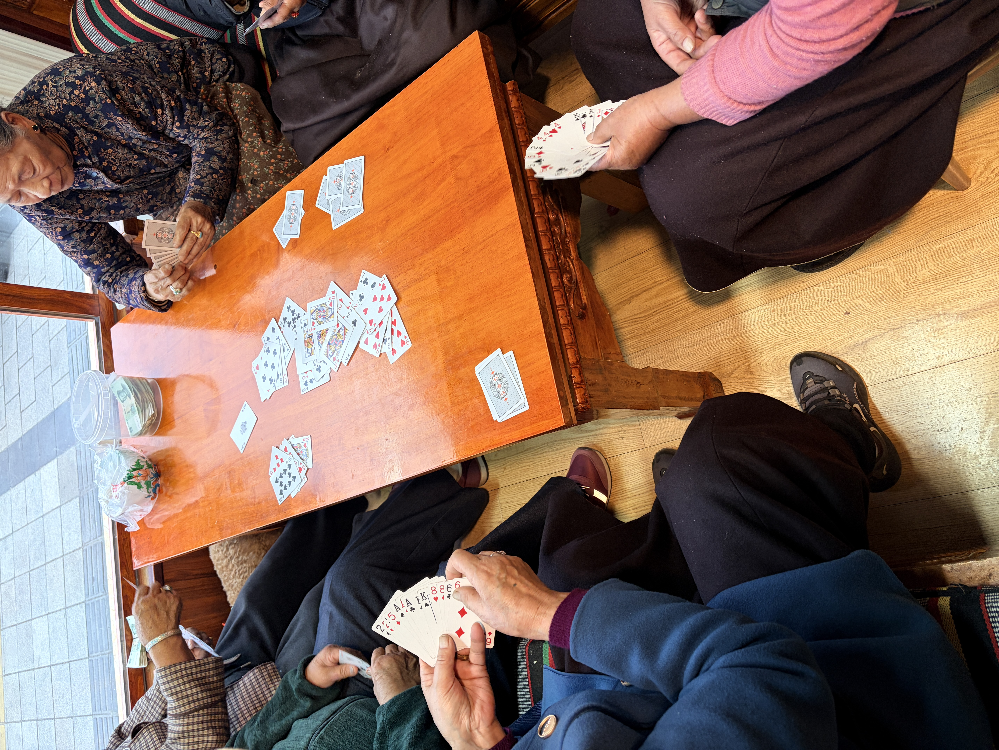

川藏线和珠峰一直在我的人生list上吧，尤其是自从横穿美国和Alaska自驾以后。小红书上找人走了一遭，学习了国内开车技巧，领略壮美山川。川藏线，是我自驾到现在风景最好的一路了，下一个是新疆，然后就是美国中西部。临别在即，写下此行的一些感悟。
这一路的风景，我还没在别的地方见到过。Alaska倒是很多雪山，但白茫茫一片就显得单调了。川藏线就不一样了，有翠绿松树、褐黄草原、洁白雪山、靛蓝湖水、灰红群山，尤其是远方雪山和山巅上的雪，哪怕是10月份了，依旧圣洁不染尘埃。动物也亲眼见识了很多之前没解锁的，野猴，狐狸，老鹰，白色牦牛，还有各种小鸟。

不过风景带来的震撼，还是比不上这一路上的见闻令人印象深刻。乘着机场大巴从布达拉宫旁边前往机场，沿路上看到有人在冰川融水的河里钓鱼，这合理吗？附近的山上还有自动浇水机，难怪能长成一些大树。联想到布达拉宫，西藏人民对宗教的信仰还是让我折服，唉，贫瘠的土地，也确实需要这信仰的力量才能让人坚持下去。
挺感谢攻略里的驴友的路线的，让我走了亚青寺河白玉寺，对宗教有了新的认识。无论是亚青寺的虔诚信徒，寺庙里面毕恭毕敬，十步之外出恭；还是白玉寺放生阿姨的善良和友好，实实在在见识到了宗教劝人向善的那一面。当然，宗教有他自己的问题，比如说在大昭寺里面有个僧侣拿着麻袋收集信徒放着的功德钱，AZ我希望这些功德钱被使用到他应该去的地方。
西藏的店主也很有意思，我当然知道做旅游生意肯定是要宰客的，比如说一条轮胎收了两倍内地市价，但也颇有暖心之举。在林芝看到家包子店看到两群老人家聚餐，想想老人家都来，肯定差不了。走进之后，店里面放着一把轮椅，两桌老人家。桌子上摆着开水扑克酥油水果和点心。老人家吃吃喝喝在温暖环境中聊着天，凌烈秋风中透着十足的温情，老板大爱，生意长隆。又看了一会，好家伙，有一桌在打扑克赌钱呢，难怪桌子上塑料桶里一沓子钱。看着学了一会，像是改版的70523，也是抓510K，就是牌力大小看了两局没整明白。
只要愿意和人聊天，大爷大哥都挺能侃的，安静的听吹牛就行了。和汉庭整理早餐的大爷聊了一个早饭，起因是我问为什么这个咖啡不是黑色？后来查了一下，发现是咖啡饮品，但大爷说和他在非洲喝的咖啡口感一样。后来他就说起了在非洲做援建司机的故事，那一口浓重的四川腔让我似懂非懂，大概能听出来他去过安哥拉，埃塞俄比亚等地开车当司机。大爷说一开始黑哥还是淳朴的，坑人的都是中国人，但后来黑哥也学坏了，开始要钱了。我问了下安全问题：虽然黑哥很多持枪的，但安全还是安全的，甚至有安保，基本上不会一个人单独出去所以意外很少。
不过拉萨的交警就一言难尽了，虽然我也是道听途说。我还车后有东西忘拿了，回去租车的地方，和几个大哥聊起来。他们今天早上取车，中午还没到就被交警扣了。问了问是不是自己的车和行驶证，得知是神州租车后，说是非法营运。好家伙，这当地政府创收可真有手段呀，大哥说一年能创百多万，看到川A的牌照就扣。
最后提一嘴吧，一路上的开销可能也就5 6K rmb吧，这些可能都比不上相机屏幕的损坏了。





